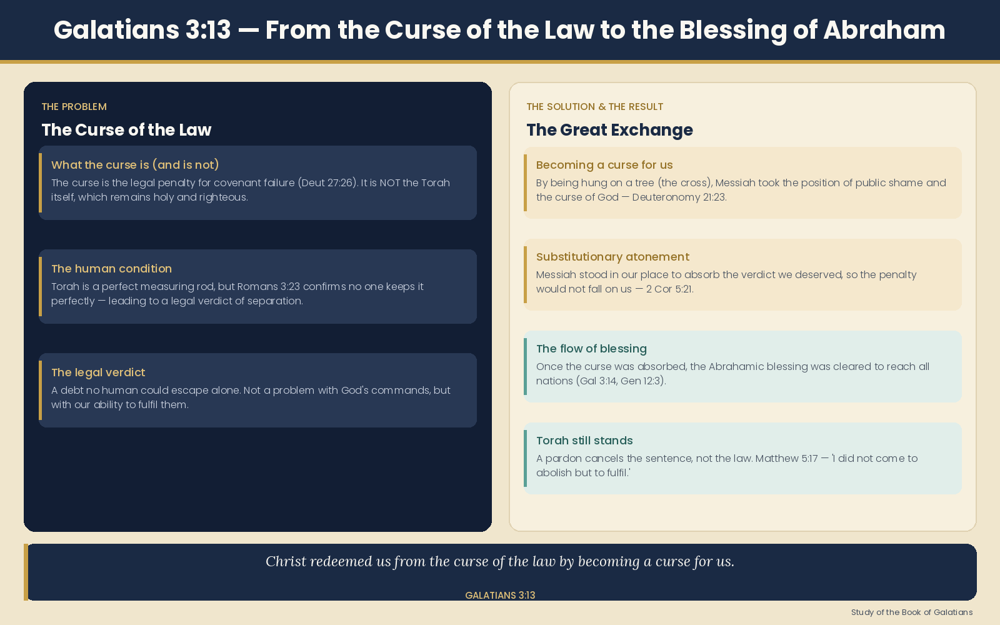

"Christ redeemed us from the curse of the law by becoming a curse for us — for it is written: 'Cursed is everyone who is hung on a tree.'"
This is one of the most theologically rich verses in all of Paul's letters. Before understanding the redemption, you have to understand what the curse actually is. Paul is quoting Deuteronomy 27:26: "Cursed is everyone who does not uphold all the words of this law by carrying them out." The curse is not Torah itself — the curse is the consequence of failing to keep it perfectly.
Torah is holy. The problem is the human condition — no one keeps it perfectly. So the curse is the legal verdict that falls on those who break the covenant.
Paul quotes Deuteronomy 21:23: "Cursed is everyone who is hung on a tree." In ancient Israel, a criminal executed and hung on a tree was considered to be bearing public shame — under the curse of God. Paul sees this as the key: Yeshua, hanging on the cross (a tree), visibly took upon himself the position of one who is cursed.
This is called substitutionary atonement — he stood in our place, under the verdict we deserved, so the verdict would not fall on us.
Paul doesn't stop at the cross. He continues in verse 14: "…so that in Messiah Yeshua the blessing of Abraham might come to the Gentiles, so that we might receive the promised Spirit through faith." The redemption from the curse has a destination — it opens the door to the Abrahamic blessing and the gift of the Spirit to all nations.
A critical point this passage makes clear: if Messiah redeemed us from the curse of the law, that means the law itself still stands. You are redeemed from a court verdict — not from the courtroom's existence. The law still defines what is right and wrong. What changed is that the penalty no longer falls on you — because Messiah paid it.
Here is the whole movement of Galatians 3:13–14 laid out as a single journey.

| Concept | Meaning |
|---|---|
| The curse | The verdict that falls on those who break Torah — not Torah itself |
| "Hung on a tree" | Messiah visibly stepped into the position of the cursed one |
| Redeemed | Bought out from under the verdict — the debt is paid |
| Torah still stands | A pardon cancels the sentence, not the law |
| The purpose | To open the Abrahamic blessing and the Spirit to all nations |
"Christ redeemed us from the curse of the law" means: the legal verdict of condemnation that hung over every human being who failed to keep Torah perfectly — Messiah absorbed it entirely, in our place, so that what was promised to Abraham long before the law existed could finally reach every nation, Jew and Gentile alike, through faith.
{kind=link}